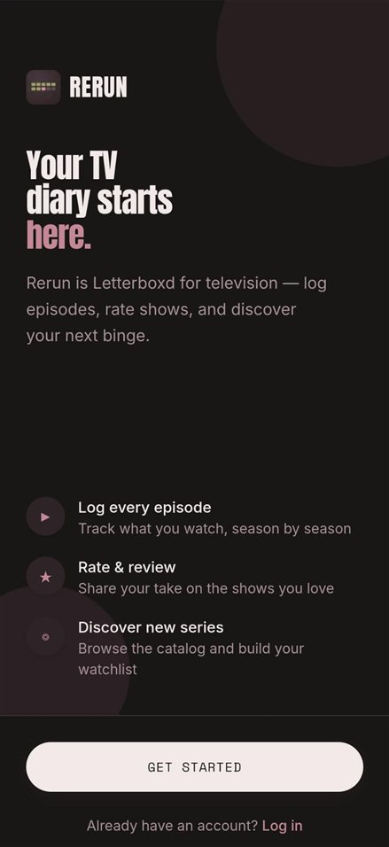
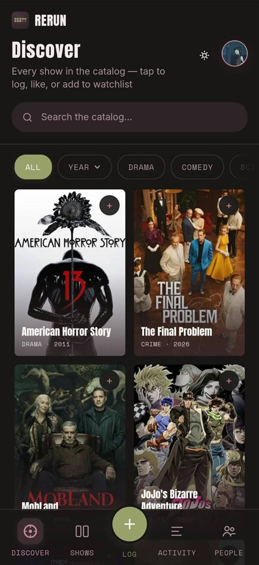
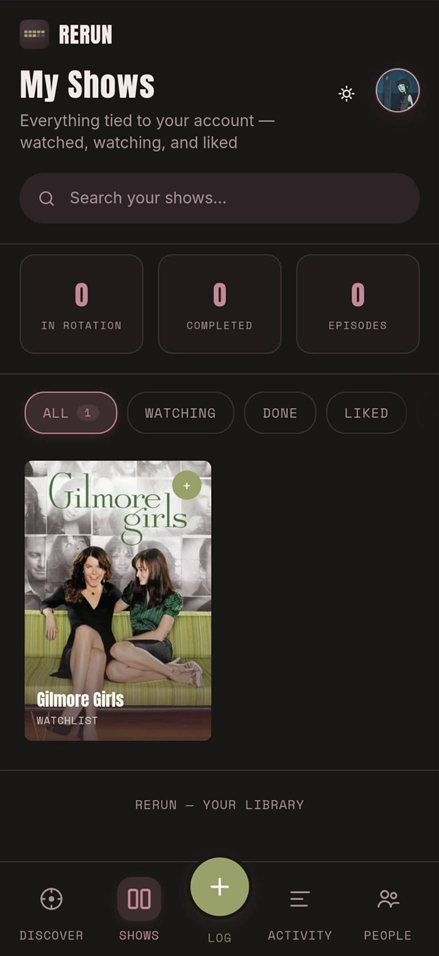
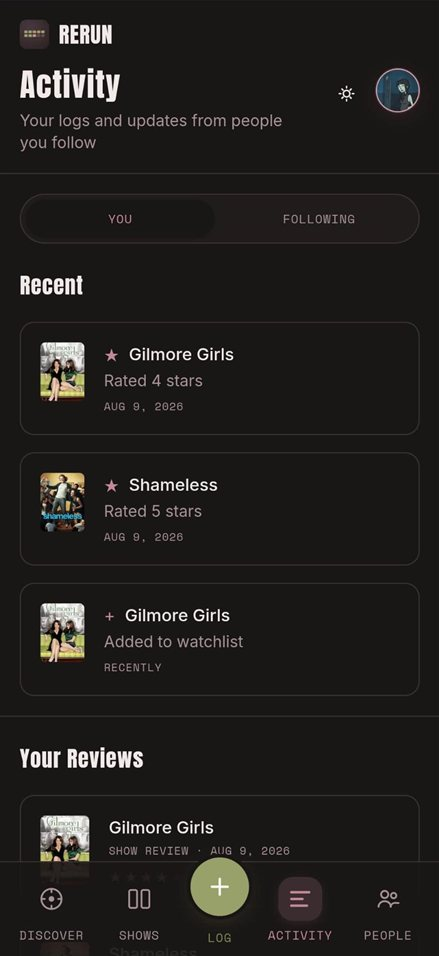
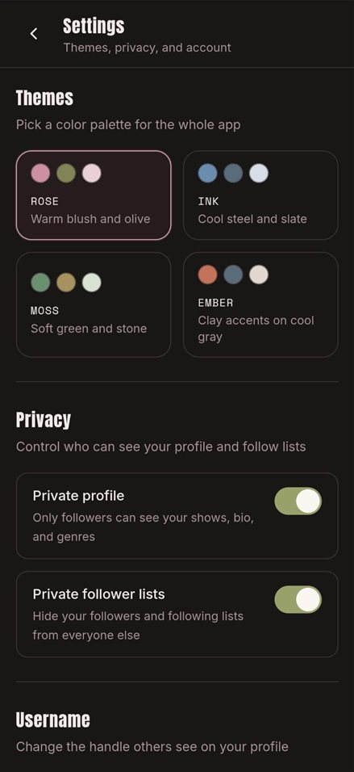

TV diary · Android
A well-kept notebook for television.
Rerun is a TV diary. Log episodes as you watch them, rate and review shows, and keep a watchlist. You can follow friends to see what they're watching.
Screenshots

Welcome 
Discover 
My Shows 
Activity 
Themes and privacy
Features
-
Log episodes
The + button is on every screen. Tap it, pick a show you're watching, and log the episode.
-
Find something to watch
Search the catalog and filter by year or genre. Add a show to your watchlist or like it straight from its poster.
-
Follow friends
See what people you follow rated or added to their watchlist. If you'd rather keep things to yourself, you can make your profile private.
Install
- 01
Download Rerun.apk on your Android phone.
- 02
Open the file. Android may ask you to allow installs from your browser or files app. Say yes.
- 03
Tap Install, open Rerun, and sign up or log in.
Rerun isn't on Google Play, so Android will warn you about installing from an unknown source. The app needs an internet connection to work.
I made Rerun myself: the interface, the web app, the database, and the Android version you can download here.
I kept the design quiet, with posters and titles up front and the controls out of the way. Text is easy to read, buttons are easy to tap, and animations stay off if you have reduced motion turned on.
Built with
- Frontend
- Next.js
- React
- TypeScript
- Tailwind CSS
- Backend
- Supabase
- Mobile
- Capacitor
- Android